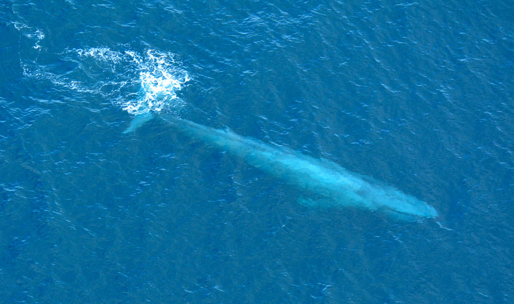

Cá voi xanh là loài động vật lớn nhất được biết từ trước đến nay trong lịch sử quả đất.[25][26] Một trong những chi khủng long lớn nhất trong Đại Trung Sinh là Argentinosaurus[27] chỉ nặng có 90 tấn, bằng với một con cá voi xanh trung bình.[28]
Cá voi xanh là loài động vật lớn nhất được biết từ trước đến nay trong lịch sử quả đất.[25][26] Một trong những chi khủng long lớn nhất trong Đại Trung Sinh là Argentinosaurus[27] chỉ nặng có 90 tấn, bằng với một con cá voi xanh trung bình.[28]
Cá voi xanh có một thân hình to lớn, dài và thon giúp chúng dễ dàng rẽ nước khi di chuyển. Chúng có bộ dạ trơn màu xanh xám và phầm bụng có màu sáng hơn kèm theo đó là một loạt nếp gấp trên cổ có thể dãn ra gấp bốn lần khi chúng ăn. Đuôi của Cá voi xanh thẳng và chia ra thành hai mái chèo giúp đẩy thân hình độ sộ của chúng dưới áp lực của dòng nước.
Cá voi xanh thuộc họ cá voi ” không răng “, có nghĩa là thay vì dùng răng, chúng có khoảng 395 tấm sừng mọc ở hàm trên và được dùng để lọc thức ăn từ nước. Như những họ hàng của mình, cá voi xanh cũng có hai lỗ trên lưng, được dùng để đẩy không khí cũ và nước biển ra khổi phổi khi chúng trồi lên để hô hấp.

Dù không sở hữu bộ răng thực sự, nhưng Cá voi xanh vẫn bị xếp vào nhóm động vật ăn thịt. Chúng sống dựa trên một chế độ ăn uống mà chủ yếu bao gồm các nhuyễn thể, giáp xác nhỏ và đôi khi là những loài cá nhỏ. Cá voi xanh ăn bằng cách bơi về phía bầy con mồi và những nếp gấp trên cổ cho phép cổ họng của chúng mở rộng, hớp lấy một ngụm nước khổng lồ vào túi chứa thức ăn được tạo ở hàm dưới và khép miệng chúng lại. Sau đó, nước được đẩy ra ngoài nhưng hàng ngàn sinh vật nhỏ bé được giữ lại bởi các tấm sừng hàm lọc thức ăn của chúng và sau đó các sinh vật ấy sẽ bị nuốt vào.
Cá voi xanh có thể tiêu thụ lên đến 6 tấn con mồi hàng ngày trong suốt những tháng mùa hè ở vùng biển lạnh và giàu thức ăn. Mặc dù Cá voi xanh ăn một lượng thức ăn khổng lồ vào mùa hè, nhưng chúng hầu như không ăn gì khi di chuyển đến vùng nước ấm vào mùa đông.
Cá voi xanh được mệnh danh là những ca sĩ lãng du khắp các đại dương. Vì cá voi xanh có thể phát ra âm thanh siêu trầm ở tần số 14 Hz. Và đó cũng là thứ âm thanh lớn nhất trên thế giới, lớn hơn cả tiếng rít của máy bay phản lực với cường độ 200 decibel. Nếu so sánh với tiếng hét của loài người ở 70 decibel, âm thanh cao hơn 120 decibel gây nguy hiểm cho tai người.